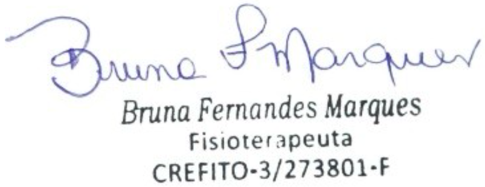

Ribeirão Preto, 02 de Março de 2026.
O presente documento refere-se ao parecer fisioterapêutico do paciente Tarso Rollemberg Cipriano, 6 anos, cujo responsável é José Carlos Garcia Cipriano. Foi diagnosticado com CID 10: M62 / F84.0.
Tarso apresenta alterações de tônus muscular global, hipermobilidade principalmente em membros inferiores durante atividades de agilidade e impacto (corridas e pulos), fraqueza de CORE, instabilidade articular e déficits de coordenação motora, necessitando de acompanhamento fisioterapêutico contínuo com frequência de 4x/semana.
As sessões acontecem na clínica Affettività, sediada na Rua Otto Benz, 864, CEP 14096-580, bairro Nova Ribeirânia, na cidade de Ribeirão Preto, SP.
02/03/2026 - R$42,50 - Atendimento Fisioterapêutico
03/03/2026 - R$42,50 - Atendimento Fisioterapêutico
05/03/2026 - R$42,50 - Atendimento Fisioterapêutico
06/03/2026 - R$42,50 - Atendimento Fisioterapêutico
09/03/2026 - R$42,50 - Atendimento Fisioterapêutico
10/03/2026 - R$42,50 - Atendimento Fisioterapêutico
12/03/2026 - R$42,50 - Atendimento Fisioterapêutico
13/03/2026 - R$42,50 - Atendimento Fisioterapêutico
16/03/2026 - R$42,50 - Atendimento Fisioterapêutico
17/03/2026 - R$42,50 - Atendimento Fisioterapêutico
19/03/2026 - R$42,50 - Atendimento Fisioterapêutico
20/03/2026 - R$42,50 - Atendimento Fisioterapêutico
23/03/2026 - R$42,50 - Atendimento Fisioterapêutico
24/03/2026 - R$42,50 - Atendimento Fisioterapêutico
26/03/2026 - R$42,50 - Atendimento Fisioterapêutico
27/03/2026 - R$42,50 - Atendimento Fisioterapêutico
30/03/2026 - R$42,50 - Atendimento Fisioterapêutico
31/03/2026 - R$42,50 - Atendimento Fisioterapêutico
